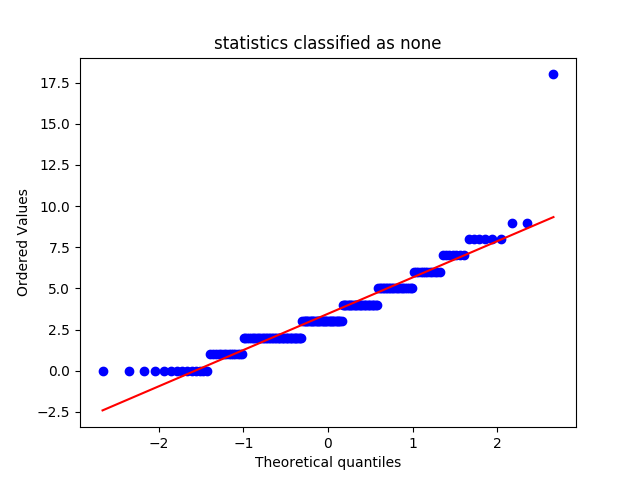

editorial_essays_statistics
Describing the Data-Set
Mean, Median and Standard Deviation
|
conclusion |
none |
premise |
thesis |
| median |
19.000000 |
3.000000 |
18.000000 |
0.000000 |
| mean |
19.038889 |
3.461111 |
19.516667 |
0.433333 |
| std |
8.087964 |
2.317479 |
10.100866 |
0.528099 |
QQ Plots

Histograms
Box Plot(s)
Normalization Test
stat: 0.948529660702, p-val:4.18042964156e-06
Not Normally distributed for statistics classified as conclusion
stat: 0.887922823429, p-val:2.23540769229e-10
Not Normally distributed for statistics classified as none
stat: 0.907631337643, p-val:3.43583539397e-09
Not Normally distributed for statistics classified as premise
stat: 0.668801307678, p-val:1.43657604695e-18
Not Normally distributed for statistics classified as thesis
Significancy Test
Using friedmann-test
Using friedmann-test
using stats.friedmanchisquare
chisq: 466.292696629
p-value: 9.6166811952e-101
statistic: 1046.27623434
p-value: 1.11022302463e-16
chi2:461.111666667
ranking[1.925, 1.0944444444444446, 3.5222222222222221, 3.4583333333333335]
Post Hoc Analysis (holm_multitest):
------------------------------------------------------
Comparing: none vs premise
z_value: 11.7371383508
p_value: 0.0
adj_p_value: 0.0
--------------------------------------------------------------------------
Comparing: none vs conclusion
z_value: 11.2676528168
p_value: 0.0
adj_p_value: 0.0
--------------------------------------------------------------------------
Comparing: premise vs thesis
z_value: 17.8404502933
p_value: 0.0
adj_p_value: 0.0
--------------------------------------------------------------------------
Comparing: thesis vs conclusion
z_value: 17.3709647592
p_value: 0.0
adj_p_value: 0.0
--------------------------------------------------------------------------
Comparing: none vs thesis
z_value: 6.10331194243
p_value: 1.03892783265e-09
adj_p_value: 2.07785566531e-09
--------------------------------------------------------------------------
Comparing: premise vs conclusion
z_value: 0.469485534033
p_value: 0.638722622535
adj_p_value: 0.638722622535
--------------------------------------------------------------------------